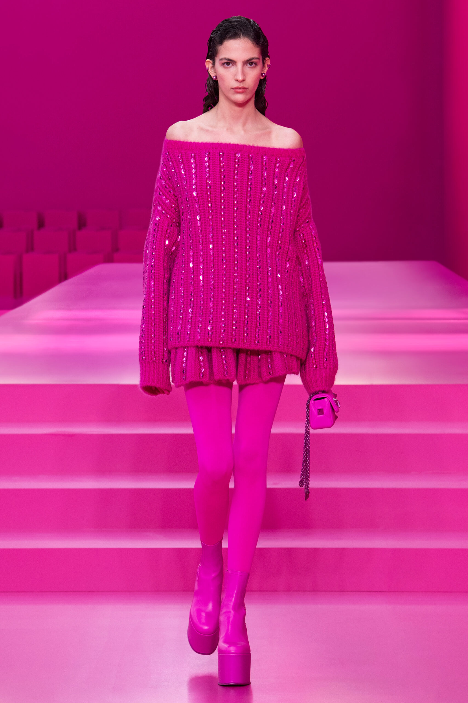
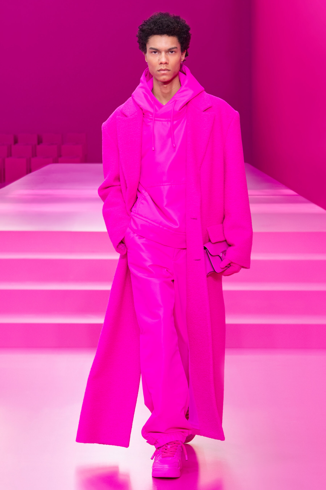
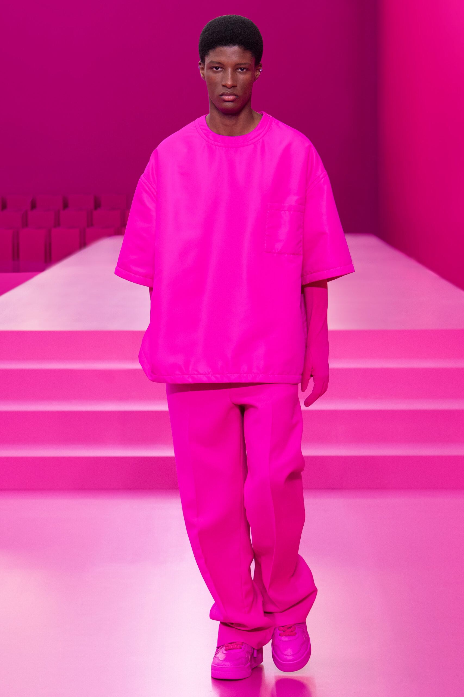
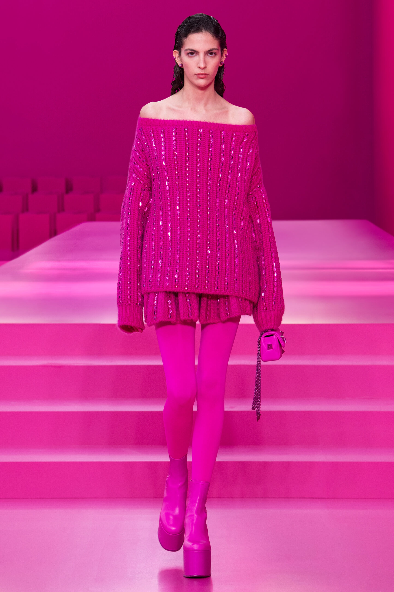
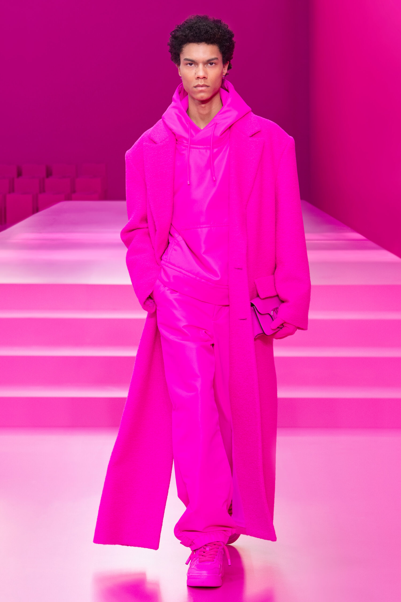
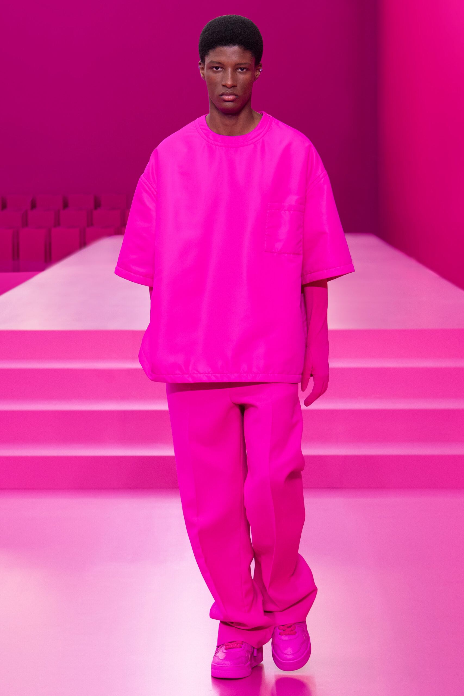

La sfilata di Valentino Autunno Inverno 2022/2023 è stata caratterizzata da uno show monocromatico in cui la tonalità “PP Pink”, ha riempito la stanza con un’esercizio di stile che va oltre l’apparenza. Nato da una collaborazione con il Pantone Color Institute , il “PP Pink” ha inondato il set de Le Carreau du Temple. Un colore forte e audace, ma anche dolce, ribelle e potente. Quello di ridurre tutto a un’unica tonalità, con solo pochi capi neri a contrasto, è un gesto radicale che verrà sicuramente premiato dai trend delle prossime stagioni.
La collezione autunno inverno 2022 di Valentino spazia da volumi morbidi, su abiti a t-shirt con scollo a barchetta, e pezzi più grafici, dalle silhouette geometrie e spigolose, addolcite da fiocchi su busto e maniche. Un romanticismo morbido fatto di balze, pizzi e tessuti si scontra con la mascolinità di pantaloni sartoriali e blazer oversize.
Ecco alcuni dei nostri look preferiti:
 




